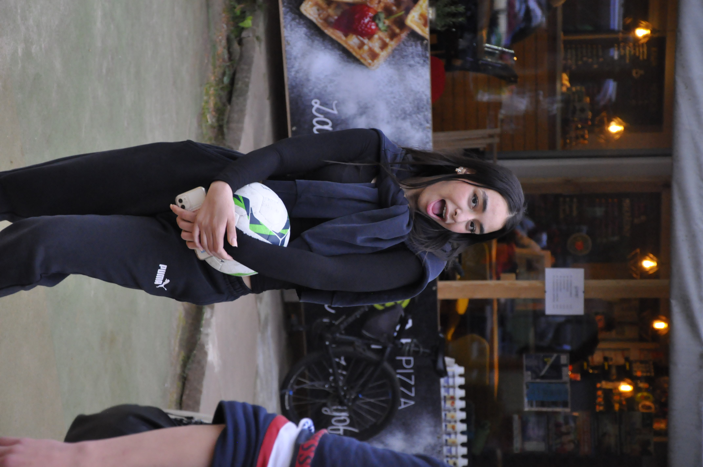
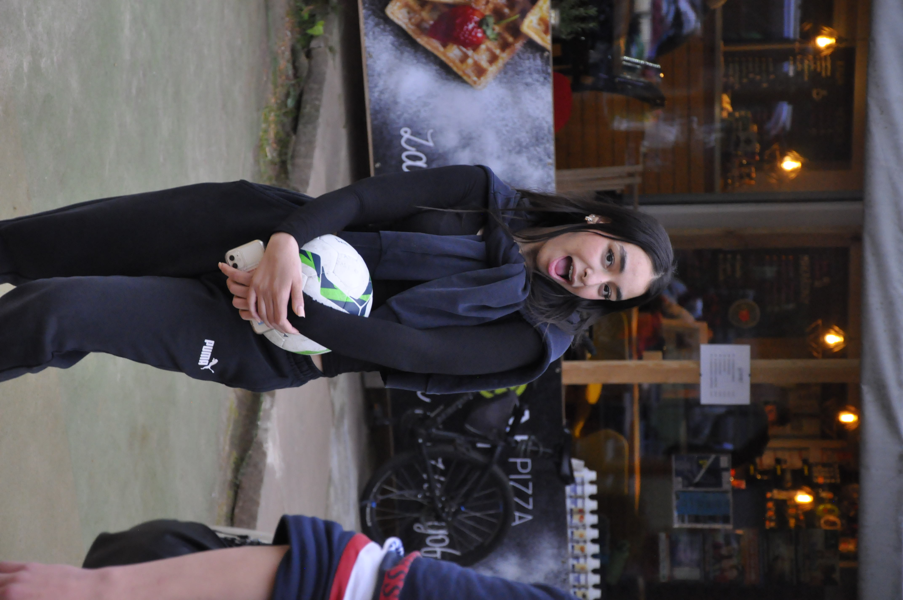
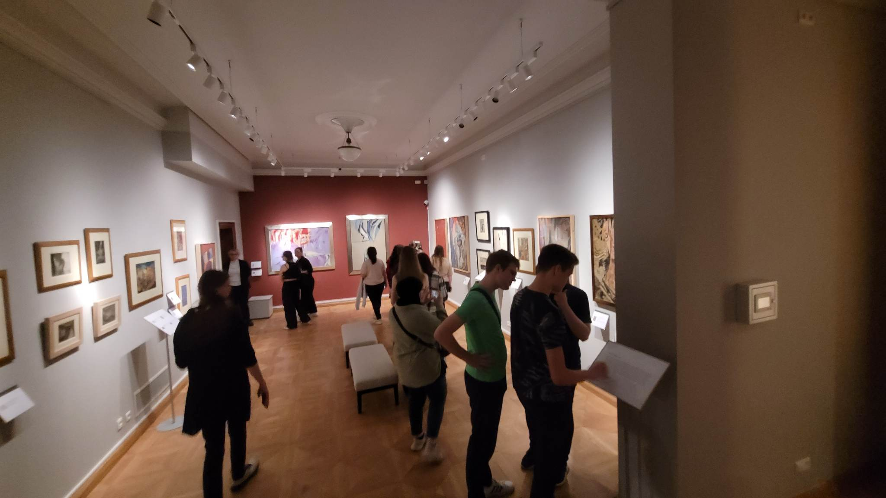
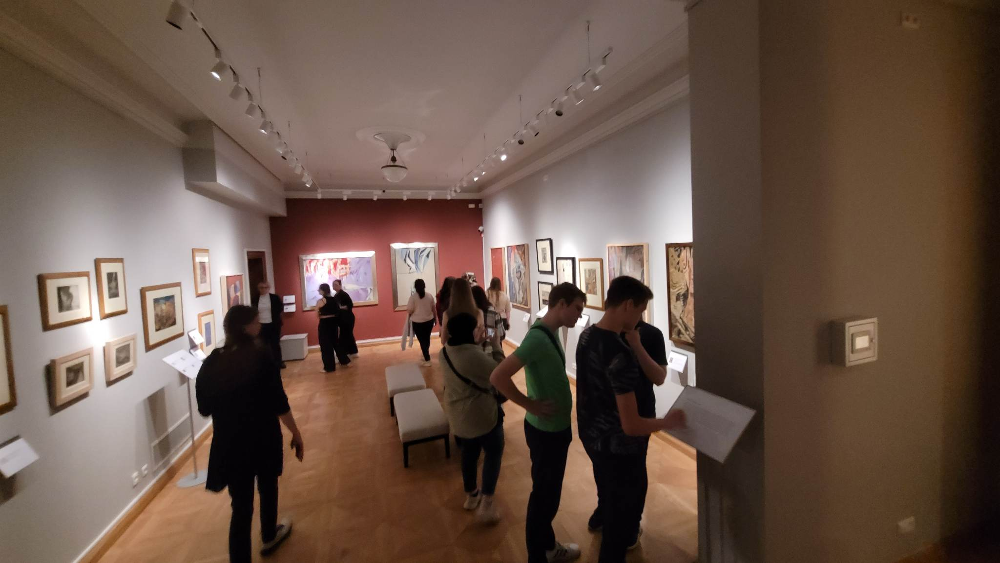

In May students of our school took part in a student exchange program. It was a part of the project „Traces of Memory”. The students from Wuppertal came to Poland to learn about our country and its history. This international project allowed us to improve our German speaking skills, make new friends and know other people’s opinions about our country. Such international cooperation has taught us tolerance and respect for the history of our countries.


 



 
